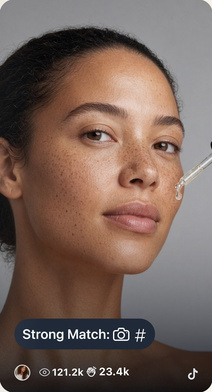
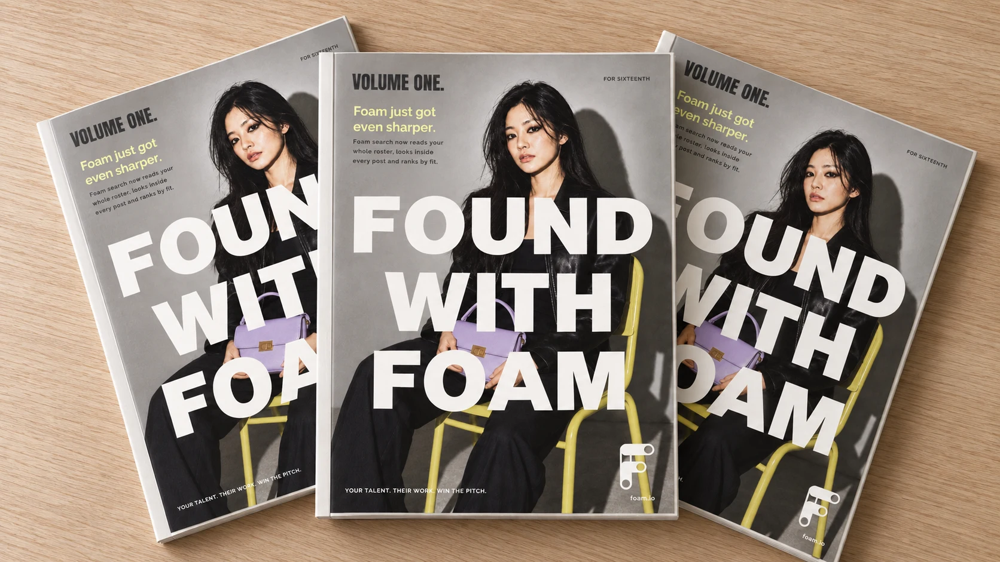
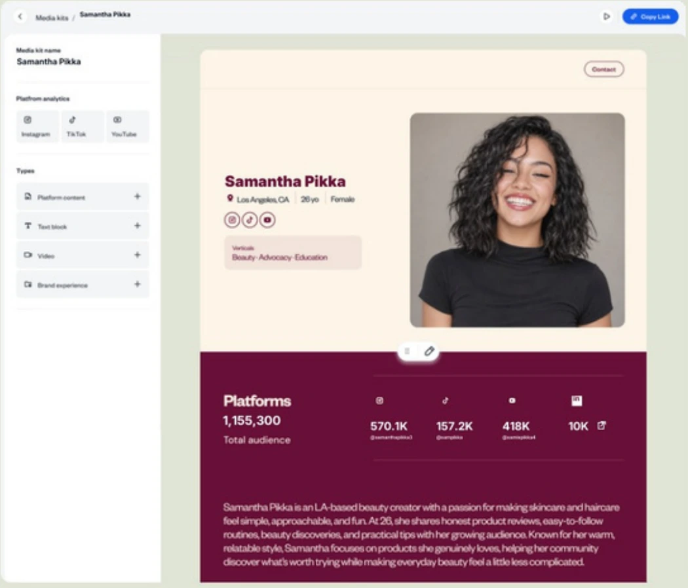
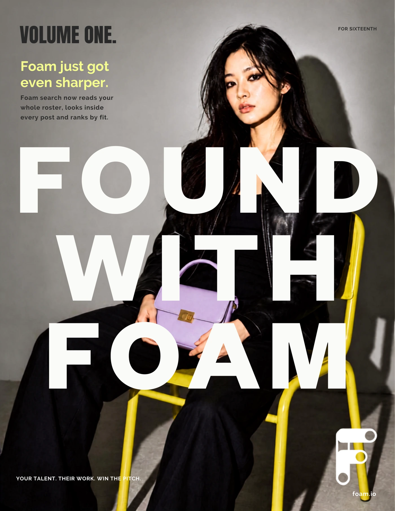

Strong MatchTHE FOAM EDITORIALVOLUME ONE / FOR SIXTEENTH
Found with Foam. Volume One.

YOUR TALENT. THEIR WORK. WIN THE PITCH.
Foam just got even sharper.
FOUND WITH FOAMA NOTE TO SIXTEENTH
Found with Foam.
Not because anything was lost.
Because now it’s easier to find.
The right Creator, the second a brief lands. The post from months ago nobody remembers — until it’s exactly what the brand is asking for.
Search now reads your whole roster. Ask for what you need the way you’d say it out loud.
Foam finds it — seen on screen, heard in a clip, written in a caption — and jumps you straight to the moment.
Then it’s time to pitch. Media kits now let you customize the story, kit by kit.
Three parts. One goal.
Your talent. Their work. Win the pitch.
HERE’S WHAT’S NEW
- Search across your whole roster
- Customize each media kit
- Search inside video, audio and captions
- Add channels and city demographics
- Jump directly to matching moments
- Add the metrics you have, manually
Fitness creators in New York who wear Nike
02 / THE INTRODUCTIONSearch what you need
FOUND WITH FOAM01 / THE TALENT
Find your Talent.
The right Creator could already be on your roster.
Ask for what the brief needs, in your own words.
START IN TALENT DIRECTORY
Creators on my roster who post healthy vegetarian recipes
- 01
Describe the brief
Include the location, interests or content you need.
- 02
Review the fit
Foam ranks your roster and brings back relevant posts.
- 03
Build your shortlist
Use the results to choose who belongs in the pitch.
03 / THE TALENTSearch your roster
FOUND WITH FOAM02 / THE WORK
Find the work.
Foam watches the video now.
Visual search finds what appears on screen. Audio and caption search find what’s said or written. Find the post, then jump to the relevant moment.
START IN EXPLORE CONTENT
Anti-aging skincare posts from the last 90 days
INSIDE A MATCH
This content strongly matches your search for “anti-aging skincare”.
Evidence found in visuals, caption, and audio.
Seen (3)
anti-aging skincare
anti-aging skincare
anti-aging skincare
Caption
skincareHeard (1)
▷ 0:57 – 1:11Speaker
ILLUSTRATIVE PREVIEW · OPEN FOAM TO EXPLORE TIMESTAMPS
01
Seen.
What appears on screen, even when the caption doesn’t name it.
02
Heard.
What is said in the clip. Search for the word or phrase you need.
03
Written.
What appears in the caption.
04 / THE WORKFind a post
FOUND WITH FOAM03 / THE PITCH
Make the pitch.
Customize the story to win the deal.
- 1
Make it unique
Each media kit can be customized: edit the bio, profile picture and verticals.
- 2
Build the story
Pick content and analytics with the builder in view. Add and link any key platforms that contribute to total audience count. You can now include city demographics, too.
- 3
Close the deal
Add lower-funnel custom metrics not available via APIs manually, such as Instagram link clicks.

ADD AND LINK PLATFORMS
in10K
1,155,300
IG · TikTok · YouTube · +10K
CITY DISTRIBUTION
Top 5 cities
- New York, New York1.3%
- Los Angeles, California0.8%
- Maku, West Azerbaijan Province0.7%
- Chicago, Illinois0.6%
- Delhi, Delhi0.6%
ADD A METRIC YOU HAVE
230Link clicks
Typed in. Not invented by an API.
1,000
bio charactersPreviously 550
100
list-name charactersPreviously 40
05 / THE PITCHBuild a media kit
FOUND WITH FOAM / VOLUME ONE
Your talent.
Their work.
Win the pitch.
Over to you Download the original issue PDF · 4 MB ↓